| About Us | Special Thanks | Site Map |
|||||||||
| About Us | Special Thanks | Site Map |
|||||||||
 |
| 今日も６時起床です。 毎日、日の出とともに起きる生活。普段の私たちからは考えられないな～。 ひでくんは夜明け前に起きて、写真撮影にでかけ、 日の出前に戻ってきました。 |
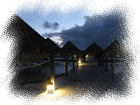 早朝の水上バンガロー |
|
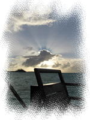 朝日 |
このお部屋からは、海から昇る朝日が見えます。 （ホライズン水上バンガローなので） 今日はちょっと雲が多くて、朝焼けがきれいにみえなかったけども。。 また明日に期待かな。 |
| 今日は、ボラボラディスカバリーの「ラグーン一周ツアー」があります。 ８時半にホテルに迎えがくるので、早めに朝ごはん済ませておかないと。 朝食は、昨日ディナーをとったレストランで。 朝食も付いているはずなので、どういうシステムになっているのか また不安になったけど、ビュッフェ形式だったので安心でした。 メニューの選択もないし、食べ放題だし。 |
||
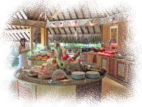 ビュッフェ |
ビュッフェのメニューは、洋食メインでまあ普通のメニューでしたが、 おかゆやうどんなどの日本食もありました。 また、一角に、オーダーした卵料理を作ってくれる鉄板コーナー（？）があります。 こちらで、好きな具材を入れたオムレツや目玉焼きなどを焼いてくれます。 今日は、オムレツをオーダーしました。 そしてフルーツをたっぷり。パイナップルとパパイヤがおいしかった。 これから船に乗るから朝食は控えめに、と思っていたのに、 ついつい食べ過ぎてしまいます。。 |
| 今日予約しているアクティビティ、「ラグーン一周ツアー」は、 日本人のフキコさんが主催している、 ボートでのラグーン一周・サメ・エイの餌付け・シュノーケリング・モツピクニックなどが セットになった盛りだくさんなツアーです。 日本語でのガイドが付いているので安心かな、と 事前に日本でメール予約していました。 |
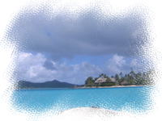 ホテボラ付近 |
８時半にロビーへいって、迎えの車を待っていると、 タヒチアンぽい、細身でちょっとイケメン（みき主観）から声をかけられました。 この人が私たちのお迎えのようです。 集合場所まで車で移動するのかと思っていたのですが、 ずんずんマティラビーチの方へ歩いてゆきます。 あれ・・？と思いながらついていくと、ビーチには、一艘のボートが。 ここからボートで移動なんだあ～。ちょっとトクした気分。 ガイドさんと私たちふたりはボートに乗り込み、 集合場所まで、ちょっとしたプライベートクルージング♪ 昨日まで滞在したホテルボラボラのそばを通り、ヴァイタペへ向かいます。 |
|
私たちは周りの海を見渡しながら、すでに興奮状態です。 あと気になるのはお天気。これから晴れるといいなあ。 ヴァイタペの船着場に到着すると、船を下りて待機。 ここは、フォトツアーの最後に写真を撮りに来たところです。 ツアーの参加者っぽい日本人が何組か待っていました。 |
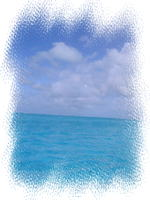 クルージング♪ |
| まずは、シャークフィーリング＆エイのタッチングのポイントに向かいます。 ※場所わすれた・・。どのへん？ ボートを降りると、足が付くくらいの浅い海です。 サメとエイはそれぞれ別々の場所にいるのかと思ったら、 同じポイントに同居してました。なんだか不思議です。 |
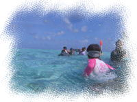 ポイント付近 |
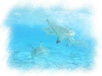 シャーク！ |
エイはとても人になついているそうで、 おなかをさわらなければ（？）、暴れることもないようです。 サメも、人を食べる種類ではないので安全だそうです。 （においで判別するらしい） ガイドのコバヤシさんが、餌をまいてエイを集めます。 |
| じっとしていると、エイが何匹も寄ってきて囲まれます。 けっこう大きくてヌルヌルしたエイがせまってくると ちょっとコワい。。 がんばって近づいてみるものの、体に触れると・・ いやああ～～～。。・・逃げ腰です。。 サメにはとても近づけませんでした。。 もったいなかったかな？ |
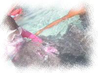 エイ接近！ |
| 次は、マンタポイントでのシュノーケリングです。 ボートは北上して島の東側へぐるりと回り、３０分ぐらいクルージングして マンタポイント（マンタレイバレーというらしい）に向かいます。 |
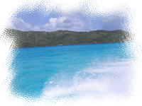 再びクルージング |
|
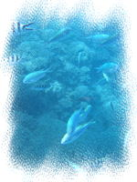 マンタバレー付近 |
マンタがいるポイントなのだけど、最近は遭遇率が落ちているらしく、 ガイドさんも、「今年に入ってから見れたのは２回くらい」といってました。 ここは深くて、お魚がいっぱい～～。 足がつかない深さのところでシュノーケルするのは初めてだったけど、 ライフジャケットをつけていたので安心でした。 だいぶシュノーケリングにも慣れてきたかな。 天気が曇ってしまったせいか、海の中はちょっと暗くなってしまったのと、 やっぱりマンタは姿を見せてくれなかったのがちょっと残念。 |
| 人泳ぎしたところで、島の南東にある細長いモツ（メルディアンやタラソスパがある）で ランチタイムです。 このモツの南端でボートを止め、みんなでぞろぞろと降ります。 私は、ボートを降りるとまずトイレに駆け込みました・・。 （ずっと我慢してたんだもん・・） ちゃんと、水洗のトイレもありました。ほっ。 |
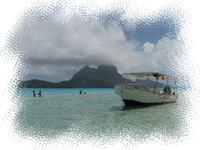 ビーチ |
「みっきぃグラビア撮影会(?)」 |
ひとまず荷物をおいて、ランチができるまで休憩タイムです。 ここからだと、ビーチの左側（南側）は外洋、正面に本島が見えます。 ここも海のグラデーションがきれいです。 まだ雲は多いものの、だんだん晴れてきました！ さて、ここで再び、「みっきぃグラビア撮影会」開始です。 近くに同行の日本人がいるだけに、ちょっとはずかしかったけど。。 カメラマンもモデルも、昨日よりはだいぶ慣れてきました。 数打ちゃ当たる、とたくさん撮った中で、何枚かはイケてる写真もあるかなあ。。 夏の間、必死でダイエットがんばったかいがありました。 |
| ビーチで遊んでいると、ランチの用意ができたようです。 陸地の木陰のテーブルに、焼きたてのマヒマヒやポワソンクリュー、パン、タロイモなどの タヒチアンランチが並びます。 浅瀬にテーブルセッティング、と思っていたのですが、 今回はたまたま別の場所だったのかな・・？ 浅瀬にはテーブル１台を置いて、おもに写真撮影場所になっていました。 ランチをそれぞれ好きなだけトレイにとり、好きな場所でランチをとります。 私たちもテーブルをひとつ陣取り、ヒナノビールを別注文して 海を眺めながら、ランチを頂きます。 泳いでおなかがすいていたこともあり、思わずおかわり。食べすぎかも。。 おなかいっぱい食べたあとで、イケメンガイドさんが 焼きあがった別のお魚のカマをもってきてくれました。 こんなところで魚のカマ焼きが食べられるとは・・。おいしかった。 |
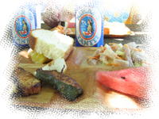 タヒチアンランチ |
| ダンナがおかわりをしにいってる間、 私がひとりで退屈すると思ったのか、イケメンガイドさんがいろいろ話しかけてくれました。 日本語で”ノアノア”ってなんていうの？（英語） とか そのうち、 日本の女性はキレイだね（英語）、とか ユー アー ビューティフォー♪ とお世辞トーク満載。。 ダンナが戻ってくると、人差し指を口に当てて、ナイショねっ、とゼスチャー。 ダンナは、何話してたんだろう？とけげんそうでしたが、妻はご満悦です。 リップサービスとわかってても、ほめられると悪い気はしないもんね～。えへ。 |
| ご飯を食べ終わって、少し休憩したあと、 ココナッツショー（ココナッツ割り体験）がありました。 地面に棒を立てて、その棒でココナッツの硬い皮をむきます。 希望者にはやらせてくれる、というので、私たちもそれぞれやらせてもらいました。 なかなか力が必要で、体重をかけてなんとか割れました。 あとは割ったココナッツのジュースを飲んだり、 ココナッツの実を削ったもの食べたり。 ココナッツミルクは髪にもいいそうで、参加者のひとりは髪に塗られてました。 私は遠慮したけど・・ なかなか楽しいランチタイムでした。 |
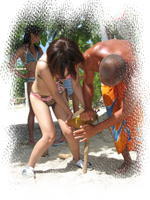 椰子の実割り |
| ボートに戻り、最後のポイント「コーラルガーデン」に移動します。 （ソフティルモツの島の近く） ここは有名なシュノーケリングポイントで、 今までのなかで一番お魚が多くてキレイな海でした！！ ライフジャケットなしで泳げたら、お魚と一緒にもぐったりして もっと気持ちいいんだろうな～～。 |
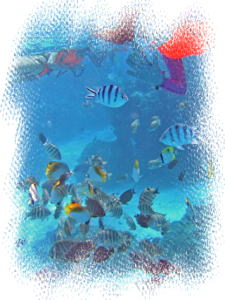 コーラルガーデン |
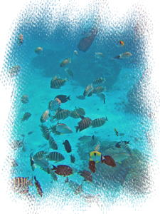 魚がいっぱい！ |
ひでくんとお魚と一緒の写真をとってあげよう、と思ったら、 隣のひでくんがなんだか苦しそうにしています。。 どうも、マスクがずれて水が入ってきちゃうみたいです。 波が高いので、マスクを直すのもなかなかできないらしく 早めにボートに戻ってしまいました。あらら、残念。。 |
| 「コーラルガーデン」のシュノーケルが終わると、ツアー終了です。 参加者それぞれのホテルに送ってもらいます。 「コーラルガーデン」から、私たちのホテルはすぐ近くなので、 一番最初にホテルの船着場に送迎、解散となりました。 いろいろ盛りだくさんであわただしいかんじもしたけど、 楽しかった～～。 |
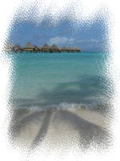 インターコンチのビーチ |
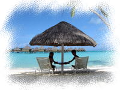 るるぶと同じ(?) |
せっかく晴れてきたし、ふたりとも水着なので、 ホテルのビーチで写真撮影の続きをすることにしました。 （写真ばっかり撮ってるな～～。。） ガイドブックの表紙に載っているのと同じアングルで、撮りたかったんだも～ん。 ほんと、絵ハガキみたいな景色。 |
| 部屋に戻って、着替えて一休み。 今日は、だいぶ日に焼けちゃいました。顔がヒリヒリします。。 ちゃんとお手入れしなくっちゃ。 持参した美白ローション・美白パック、フル稼働です。 ヘアトリートメントクリームも、空港で買っておいて正解でした。 日差しと潮風で、思った以上に髪のダメージ大きいです。 |
| さて、今日こそは日本人スタッフさんをつかまえて、 「食事付き」について確認しなくては。 アクティビティセンターに行って、受付のスタッフに 「Can I speak Japanese staff ?」 と尋ねると通じたらしく、すぐ電話をかけてくれました。（たぶんタラソスパに） でも、あいにく電話をかけた先には不在のよう。 困ったな・・と思っていると、 捜し求めていた日本人スタッフさんが、ちょうどセンターにやってきました。 タラソスパから移動してきたばかりだったようです。グッドタイミング！ |
| まずは食事について質問すると、 「チェックインのときに、案内の用紙をもらいませんでしたか？ごめんなさい。。」と。 レストランやアクティビティなどのホテルの情報を日本人向けにまとめたものがあり、 チェックインのときに渡されるはずなのですが、 私たちのときはたまたま忘れられてしまったらしいのです。 ディナーについては、ひとり6974フラン内で好きなものをオーダーでき、 超過分（ちょっとくらいはサービスしてくれるみたい）や、飲み物は別料金 とのことで、伝票には総額が記載されるけど気にしなくてＯＫ、だそうです。 これなら昨日の分も、ひとり1000フランオーバーくらいかな。よかった～(´▽｀) ホッ。 |
| あとは、明日のアクティビティ（ジープサファリ）の予約をしました。 明日の午前中は天気がよくないらしいので、午後のツアーにしました。 やっぱり日本人スタッフさんがいると安心です。 うちらの英語力では。。。 |
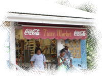 ティアレマーケット１ |
夕食までまだ時間があるので、ホテルから徒歩でいけるスーパー 「ティアレマーケット」に行ってみることにしました。 お土産はヴァイタペやパペーテで買おうと思っているので 特に必要なものもなかったのだけど、 お土産下見＆相場チェック♪ |
| ティアレマーケットは、インターコンチから、ホテボラと逆方向に１５分ほど 歩いたところにあります。 １本道だし、アクティビティセンターで地図をもらえたので 迷わずに到着しました。 こじんまりしたスーパーというかんじで、広さは日本のコンビニくらい。 せっけんやクッキー、紅茶など、おみやげのコーナーもありました。 とりあえず、値段をメモメモ。 明日、ヴァイタペのスーパーと比較してみようっと。 ミネラルウォーターとヒナノビール（缶）を買って、 ホテルに戻りました。 現地のお菓子とかも買いたかったけど、ひでくんのお許しがでませんでした・・(T▽T) |
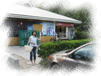 ティアレマーケット２ |
| 部屋に戻って、食前酒がわりにさっき買ったヒナノビールを空けました。 おつまみは、日本から持参したトマトプリッツ。 すると、酔いがまわったのか、ひでくんがねむねむモードに突入してしまいました・・。 今日も朝から泳いだり、けっこうハードだったからなあ。 少し寝かせておいてあげましょう。 ひでくんが寝ている間に、ガイドブックを眺めていた私も、 いつの間にかウトウト。。。 ・・はっ、と目覚めると、もう８時過ぎです。 急がないと、晩ごはん食べ損ねちゃう～～。 あわててひでくんを起こします。 ひでくんは、爆睡中に無理やり起こされたので、 寝る前よりねむねむでつらそうだったけど、、 何はともあれ、晩ごはん～！ ・・・私、鬼嫁？ |
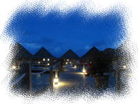 夜の水上バンガロー |
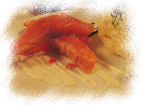 サーモンマリネ 西洋わさび風味のポテトサラダ添え |
レストランに入り、 今日は、前菜・メインディッシュ・デザートの３皿をオーダーします。 合計額は、ミールプランの範囲内です。 ◆ひでくんのセレクトメニュー ・サーモンマリネ 西洋わさび風味のポテトサラダ添え 2200CFP ・メカジキのマリネ カレーソース、ライス、レーズン添え 3200CFP ・パッションフルーツのスフレ オレンジキャラメルとライムシャーベット添え 1500CFP ◆みきのセレクトメニュー ・ビーフカルパッチョ アンチョビドレッシングとパルメザンチーズ添え 2000CFP ・スパイシーサーモン タブレとアスパラガス添え 3400CFP ・バナナのフォティーユ ココナッツアイスとチョコレートフレーク添え 1500CFP |
| ビーフカルパッチョは、とても一人分の前菜とは思えない量・・。 ３～４人でつまんでもよいくらい。ワインかビールが欲しくなる・・。 メインの魚料理は肉料理ほどのボリュームではなく、普通よりちょっと多めってくらいでした。 このくらいがちょうどよいかな。 デザートまで食べるとやっぱりおなかいっぱい・・。 昨日よりは、まだ苦しくないけど。 |
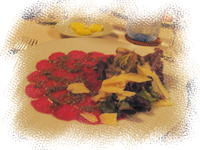 ビーフカルパッチョアンチョビドレッシングと パルメザンチーズ添え |
| 今日はお疲れなので、早めに寝ることにします。 明日は、比較的のんびりの予定。 午前中に、ヴァイタペでお買い物、午後からはジープサファリです。 |
Previous Day ( 3rdDay ) ｜ top ( 4thDay ) ｜ Next Day ( 5thDay ) |